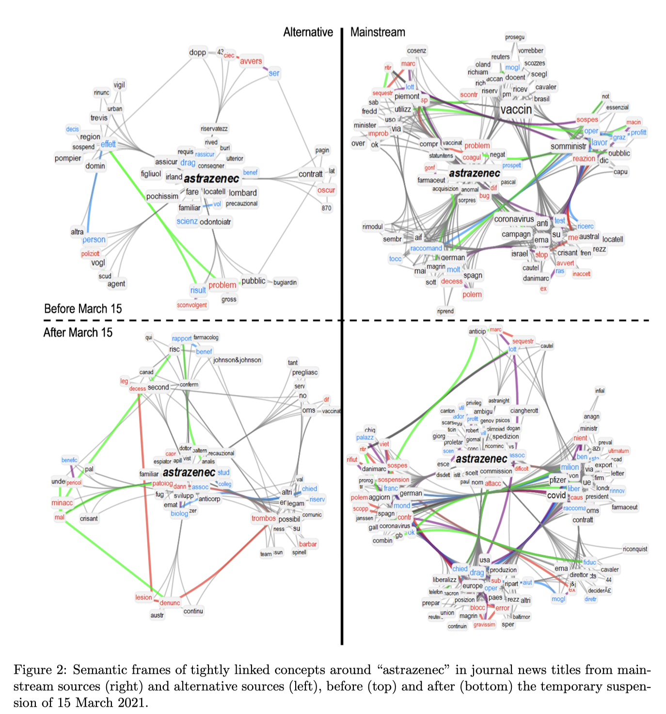
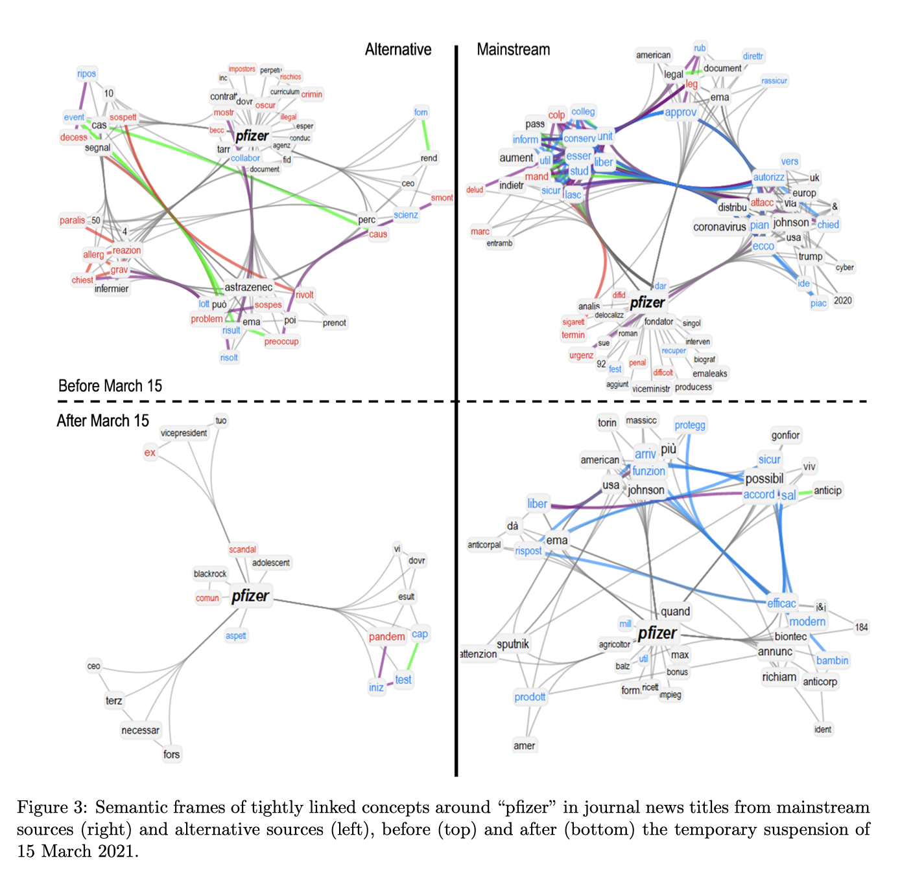
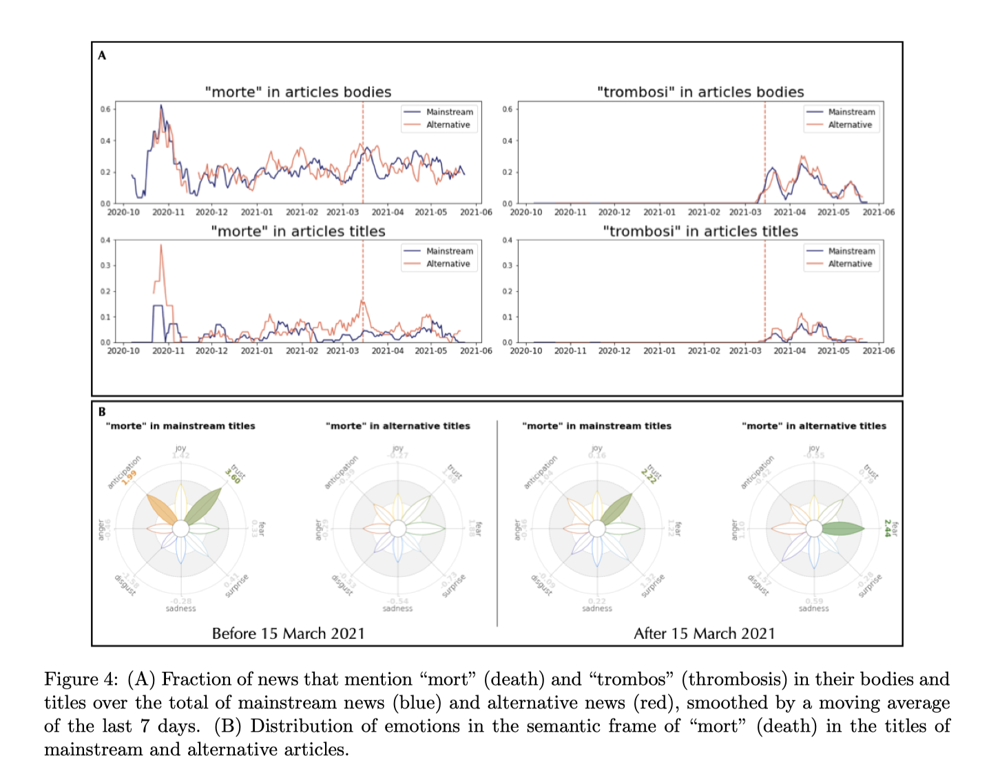

越来越多的社交网络学者， 为测量情绪， 基于心理学家 Robert Plutchik 提出的模型（通常简称为“Plutchik轮”，人类的情绪一共有8大类）制作了大量的情绪可视化作品。在某种程度上，Plutchik轮可以看做情绪指纹，例如不同的电影题材在8类情绪的分布是不一样的。
今天介绍 PyPlutchik，这是一个 Python 库，专门用于在文本或语料库中可视化 Plutchik 的情绪。 PyPlutchik 绘制 Plutchik 的花朵，每个情感花瓣的大小取决于语料库中检测到或注释了多少情感，也代表每个情感花瓣的三个强度程度。
安装
pip3 install pyplutchik
Usage
from pyplutchik import plutchik
emotions = {'joy': 0.6,
'trust': 0.4,
'fear': 0.1,
'surprise': 0.7,
'sadness': 0.1,
'disgust': 0.5,
'anger': 0.4,
'anticipation': 0.6}
plutchik(emotions)
功能特性
PyPlutchik 提供了一个即插即用的工具，用于在文本或语料库中定量表示 Plutchik 的情绪。 它尊重 Plutchik 轮中每个花瓣的原始颜色和空间位移。
在 Pyplutchik 中，用户可以只传递一个字典作为唯一参数，其中字典的键必须是 8 种基本情绪。 每个值必须是 ∈ [0, 1]。
每类情绪存在三种强度，下表是Pyplutchik的8大类情绪三种强度汇总。
用户还可以给每个情绪传入一个长度是3的列表，依次表示情绪在低、中、高三种强度的程度，数值0 和 1 之间。
| Lower intensity | Emotion | Higher intensity |
|---|---|---|
| Annoyance | Anger | Rage |
| Interest | Anticipation | Vigilance |
| Serenity | Joy | Ecstasy |
| Acceptance | Trust | Admiration |
| Apprehension | Fear | Terror |
| Distraction | Surprise | Amazement |
| Pensiveness | Sadness | Grief |
| Boredom | Disgust | Loathing |
PyPlutchik 也可表征用户数据中的主要二元、次要二元、二元和相反的情绪。 它会自动从字典的关键字中了解用户想要显示什么样的二元组。
绘图技巧
可以专注于情绪子集，不会忽视其他情绪，将情绪列表作为参数“highlight_emotions”的值传递：
我们可以比较同一亚马逊语料库的不同子组，将我们的可视化并排放置，并仅突出显示愤怒、厌恶和恐惧的花瓣，以轻松发现这些负面情绪在 5 星评论中的表现如何低于 1 星评论 .
或者可以隐藏坐标、刻度和标签，只绘制花瓣，使用参数 show_coordinates = False 和 show_ticklabels = False。下图是imdb不同电影的情绪轮
查看文档
有关所有参数的文档和示例库，请参见文档
🔥 PyPlutchik 2.0 即将推出！ 新功能包括从文本中提取情感并检查非主题词典。 敬请期待……🔥
说明
如果使用PyPlutchik，请在文献中说明，格式如下
Semeraro A, Vilella S, Ruffo G (2021) PyPlutchik: Visualising and comparing emotion-annotated corpora PLOS ONE 16(9):e0256503.https://doi.org/10.1371/journal.pone.0256503
Semeraro的研究
Semeraro, Alfonso, Salvatore Vilella, Giancarlo Ruffo, and Massimo Stella. "Writing about COVID-19 vaccines: Emotional profiling unravels how mainstream and alternative press framed AstraZeneca, Pfizer and vaccination campaigns." *arXiv preprint arXiv:2201.07538* (2022).
- 摘要: 自 2020 年 11 月宣布 COVID-19 疫苗以来，媒体和社交媒体对 COVID-19 疫苗进行了大量辩论。由于大多数研究都集中在社交媒体中的 COVID-19 虚假信息上，与其他来源相比，主流新闻媒体如何构建 COVID-19 叙述很少受到关注。为了填补这一空白，我们使用认知网络科学和自然语言处理来重建 5745 条关于 COVID-19 疫苗的新闻的随时间变化的语义和情感框架。我们的数据集涵盖了 8 个月内的 17 个网点，其中包括在 Facebook（500 万总股数）和 Twitter（20 万股总股数）上大量转发的意大利新闻文章。我们发现主流消息来源构建“疫苗/疫苗”的总体概念的方式始终具有高度的信任/预期和较少的厌恶。在替代来源构建 COVID-19 疫苗的方式中，这些情绪严重缺失。在疫苗的特定实例中发现了更多差异。另类新闻包括以强烈的悲伤来描述阿斯利康疫苗的标题，而主流标题中没有。与“阿斯利康”相比，主流新闻最初将“辉瑞”与副作用（例如“过敏”、“反应”、“发烧”）相关联更多。随着后一种疫苗的暂停，在 2021 年 3 月 15 日，我们发现了一种语义/情感转变：即使是主流文章标题都将“阿斯利康”框定为在语义上更丰富与副作用的负面关联，而“辉瑞”则经历了积极的效价转变，主要与其更高的效率有关。血栓形成与可怕的概念联想一起进入了疫苗的框架，而死亡这个词经历了情感转变，在替代标题中转向恐惧，在主流标题中失去了希望的内涵，缺乏预期。我们的发现揭示了媒体采用的围绕 COVID-19 疫苗的情感叙述的关键方面，强调了了解替代媒体和主流媒体如何报道疫苗接种新闻的必要性。
- Keywords: natural language processing, text analysis, complex networks, cognitive network science, COVID-19, COVID-19 vaccines
  